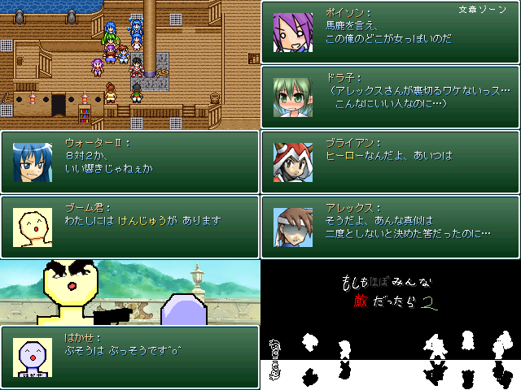

作品紹介
| ≪ Back | トップページ | 作品一覧 | Next ≫ |
| No008. - もしもほぼみんな敵だったら２ |

| 使用ツール：RPGツクール2000 |
| 作者：牧場の牛肉 |
| ジャンル：中編やるゲ |
| 動画・配信：○ |
| 夏の陣09の続編でもあり、リメイクでもあり、パラレルワールドでもある。 前と比べてかなり別物なのでプレイした人もしてない人も大丈夫。 ギャグメイン、サブにシリアスなストーリーと、 難しくはないが、油断するとやられる難易度のデフォ戦ゲーです。 楽しめる戦闘を目指す…つもり。 |
| 管理人コメント：お～ 戦闘アニメ お～ |
| ダウンロード(12.1MB) ① ② / 感想掲示板 ツイート |
更新情報・お知らせ
- 2012/01/10
- 本体修正 パッチ追加
- 2011/12/30
- パッチ追加
- 2011/12/26
- パッチ追加
- 2011/12/23
- 提出
- 2011/10/30
- エントリー